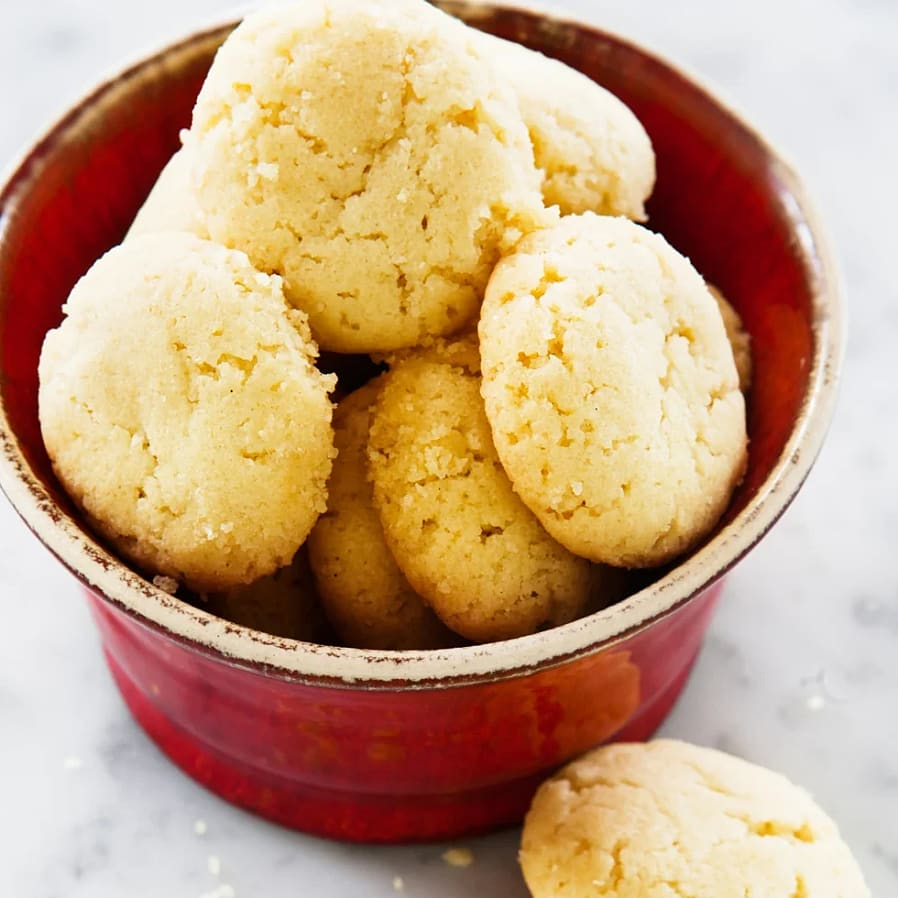

Vaniljdrömmar

Description
Vaniljdrömmar are crunchy Swedish cookies filled with air.
Ingredients
- 50 g Butter
- 1 1/2 dl Sugar
- 1 tablespoon Vanilla sugar
- 1/2 dl Rapeseed oil
- 1/2 tablespoons Baker's ammonia
- 2 dl flour
Steps
- Preheat the oven to 150 C.
- Whisk butter, sugar and vanilla sugar into a batter. Gradually add the oil during this process.
Add the baker's ammonia with some flour and whisk it in. Then gradually add the rest of the flour.
- Roll the dough into small balls. Put them on a baking sheet.
- Bake in the middle of the oven for 15-20 minutes. Then let cool on the baking sheet.